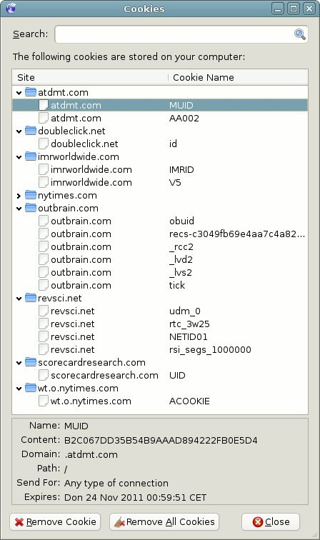

We believe security software like Whonix needs to remain Open Source and independent. Would you help sustain and grow the project? Learn more about our 14 year success story and maybe DONATE!
Project-APT-RepositoryDocumentationThe World Wide Web And Your PrivacyPrevious page: Project-APT-RepositoryIndex page: DocumentationNext page: The World Wide Web And Your PrivacyData Collection Techniques

How third party tracking and data mining is accomplished. Overview of Data Collection Techniques.
Introduction
To achieve proper anonymity practices, it is necessary to have a basic understanding of the technical capabilities of adversaries that are seeking to undermine privacy on the Internet. For Whonix users, this means how third-party tracking is designed to build profiles by tying information ("identifiers") to a specific individual or correlating it to a smaller group of people.
The modus operandi of trackers is sourcing identifiers that are available, unique and persistent. In other words, information that: [1]
- is easily accessible
- is specific to you or your device
- will not change over time
Examples of identifiers fulfilling the criteria include names, email addresses or phone numbers. [2] Even though identifiers will not always meet all three criteria, they are still useful for tracking purposes. For example, many "weak" identifiers can be combined into a strong, single one. Also, identifiers that meet two of the criteria can be useful, for instance to greatly reduce the possible set of individuals. Conventional names are not necessary for tracking purposes; artificial identifiers like cookies and advertisement IDs are just as sensitive if they build up a rich profile of an individual over time, since "anonymous" profiles can usually be linked to real people later on. [1]
A sample of identifiers that can utilized by third-party trackers is summarized below. It should be stressed that this table and wiki entry is not an exhaustive list; new identifiers are constantly emerging from academic research and in response to technological changes over time.
Identifiers |
Unique |
Persistent |
Available |
|---|---|---|---|
Web Identifiers |
- |
- |
- |
Cookies |
Yes |
Until user deletes |
In some browsers without tracking protection |
IP Address |
Sometimes (many users behind corporate or ISP NAT will share it) |
On the same network, may persist for weeks or months |
Always |
TLS State |
Yes |
For up to one week |
In most browsers |
Local Storage Supercookie |
Yes |
Until user deletes |
Only in third-party IFrames; can be blocked by tracker blockers |
Browser Fingerprint |
Only on certain browsers |
Yes |
Almost always; usually requires JavaScript access, sometimes blocked by tracker blockers |
Phone Identifiers |
- |
- |
- |
Phone Number |
Yes |
Until user changes |
Readily available from data brokers; only visible to applications with special permissions |
IMSI and IMEI Number |
Yes |
Yes |
Only visible to applications with special permissions |
Advertising ID |
Yes |
Until user resets |
Yes, to all applications |
MAC Address |
Yes |
Yes |
To applications: only with special permissions. To passive trackers: visible unless OS performs randomization or mobile device is in airplane mode |
Other Identifiers |
- |
- |
- |
License Plate |
Yes |
Yes |
Yes |
Face Print |
Yes |
Yes |
Yes |
Credit Card Number |
Yes |
Yes, for months or years |
To any companies involved in payment processing |
Active Web Contents
Web content that is accessible by browser plugins such as Flash, Java applet, ActiveX and Silverlight and even JavaScript renders the Web more dynamic and colorful. However, permissions are also granted to websites to execute code locally on a machine, increasing the security risks. If executed, these plugins can read a host of details about the user's computer and network configuration and send it to a remote server. Certain techniques even permit files to be read and edited on the user's machine, and in extreme cases this allows complete control over it.
 Signed Java applets are particularly hazardous. By accepting its
signature and by extension the applet, the visited webserver
automatically receives all user rights on the computer. The applet may
then read the IP address, MAC address, and even HDD/SSD contents.
Signed Java applets are particularly hazardous. By accepting its
signature and by extension the applet, the visited webserver
automatically receives all user rights on the computer. The applet may
then read the IP address, MAC address, and even HDD/SSD contents.
Limiting browsing to trusted websites does not mitigate the risk from applets. In the recent past, numerous popular websites have been hacked and infected with malicious code. Greater security requires these plugins to be blocked, deactivated or removed.
With Whonix, an adversary will not benefit from learning the IP address via this method: it is either a local IP address shared among all Whonix users or the IP address of a Tor exit relay, both of which do not reduce the user's anonymity set. Further, the MAC address is a virtual one, different from the host system, and is therefore worthless to attackers. Although active content will not reveal the real IP address, it is deactivated in Tor Browser by default. See Browser Plugins for a detailed discussion of browser plugins in Whonix and the potential effects on anonymity, security, and privacy.
Border Gateway Protocol
The Border Gateway Protocol (BGP) refers to the routing protocol for the Internet: [3]
The BGP protocol specifies a TCP-based communications method for establishing routed peerings between Autonomous System (AS) border routers (ASBRs), that facilitate the exchange of information about routable IP prefixes. BGP peerings exist between all active Internet Autonomous Systems.
BGP is a path vector protocol, and BGP-enabled ASBRs send path vector messages to each other with lists of Internet-routable IP prefixes along with a Autonomous System (AS) paththe list of ASNs that must be traversed to reach that prefix.
BGP currently manages nearly 800K Internet-routable prefixes across the Internet.
Unfortunately the BGP protocol is prone to leaks and vulnerable to traffic shaping.
Route Hijacking
In this attack, groups of IP addresses are taken over via corruption of Internet routing tables maintained by the BGP: [4]
- Adversaries re-route traffic for interception or modification purposes by maliciously manipulating BGP IP prefixes -- with a specific IPV4 or IPV6 address block and a path of AS numbers, the specific ASNs the traffic must pass through (to reach the announced address block) are controlled.
- Edge routers are then configured to announce prefixes that have not been assigned to them, leading to Internel-level BGP hijacking. If a shorter or more specific path is offered (or claimed), then the traffic is relayed to the hijacker. [5]
Recent research has identified that malicious networks ("hijackers") typically have the following characteristics:
- The address blocks of hijackers usually disappear faster than normal - suspicious networks last 50 days on average compared to almost two years for legitimate networks.
- Serial hijackers generally advertise more IP address blocks ("network prefixes").
- Networks advertised by serial hijackers are often registered in different countries and continents, in stark contrast to legitimate networks.
For a recent, real-life BGP re-routing attack on a multi-national bank, see: Using BGP to Reroute Traffic during a DDoS.
Route Leaks
The IETF has defined this phenomenon: [6]
The Internet Engineering Task Force (IETF) in RFC 7908 provides a working definition of a BGP Route Leak as "the propagation of routing announcement(s) beyond their intended scope. That is, an announcement from an Autonomous System (AS) of a learned BGP route to another AS is in violation of the intended policies of the receiver, the sender, and/or one of the ASes along the preceding AS path."
Leaks pose security and privacy threats, since traffic can be redirected through unintended paths which may enable eavesdropping or traffic analysis. Leaks can be either accidental or malicious, but they usually arise from 'honest' mis-configurations. Visibility is necessary so it is possible for network operators to identify ISPs that are propagating bad routes (which are advertised during a route leak). This necessitates proper network monitoring tools so good actors can visualize and immediately modify any BGP-initiated route changes. [6]
Browser Fingerprinting
Research from a pool of 500,000 Internet users has shown that the vast majority (84%) have unique browser configurations and version information which makes them trackable across the Internet. When Java or Flash is installed, this figures rises to 94%. [7] Considering this research relied on a relatively small number of variables, [8] companies with advanced fingerprinting capabilities may be approaching 100%, particularly in combination with cookies.
Fingerprinting and Anonymity
 Academics suggest that around 33 bits of information is required to
positively identify one person out of several billion!
[9]
Academics suggest that around 33 bits of information is required to
positively identify one person out of several billion!
[9]
For anonymity purposes, it is necessary to reduce the number of bits of information (entropy) the browser provides to an acceptable lower bound; for instance, 18.1 bits of entropy means that a browser chosen at random will share the fingerprint with one in 286,777 other browsers. [10] Browser uniqueness research has revealed the entropy associated with various pieces of browser information: [11]
Variable |
Entropy (bits) |
|---|---|
Plugins |
15.4 |
Fonts |
13.9 |
User agent |
10.0 |
HTTP accept |
6.09 |
Screen resolution |
4.83 |
Time zone |
3.04 |
Supercookies |
2.12 |
Cookies enabled |
0.353 |
Fingerprinting Techniques
The primary browser fingerprinting methods that are used by data miners are outlined below. Note that many of these require active JavaScript code to be effective.
Method |
Description |
|---|---|
AudioContext fingerprinting |
The Audio API is used to fingerprint users by generating an audio signal with the oscillator and hashing the resulting signal to create an identifier; no access to the microphone is required since measurement relies on signal processing differences. [12] [13] |
Battery API |
The Battery Status API allows websites to query the browser for the charging status of a host device or the current battery level. There are sufficient states and a long enough lifespan for short-term identifiers to enable tracking. [12] |
Clock skew/precision measurements |
Differential parameters are used to measure the time difference (down to milliseconds) between a user's computer and that of the server. Clock precision measurements rely upon how long operations take on a partricular system. |
CSS + HTML |
This is a side-channel attack called "CSS Prime+Probe" that utilizes HTML and CSS. It relies on rendering a web page that includes a long HTML string variable that completely covers the cache. Then a search for a short, non-existent text substring is performed. The time to carry out this probing operation is sent to an attacker-controlled server, revealing differences in the traces of the cache while loading different websites. This attack does not require JavaScript and works against hardened browsers like Tor Browser. [14] [15] |
Fonts |
System fonts are collected by Flash or Java applets, or by CSS introspection. |
getClientRects fingerprinting |
Security researcher Jose Carlos Norte notes: [16] If JavaScript is enabled, the fingerprint hash is completely dissimilar when using Tor Browser on different computers. For further technical information see: Mozilla: Element.getClientRects() and CSSOM View Module: getClientRects. |
HTML5 canvas |
A precise fingerprint is provided by the rendering of WebGL, font and color data to a canvas element. This is then extracted from the image buffer, and an identifying hash is computed. For more information, see here. |
HTTP Accept headers |
With every webpage request, the browser sends URL variables within the HTTP protocol framework that can be analyzed. This includes personalized language, browser type and version, operating system and version, supported character / font sets, file codecs, and the last visited webpage. |
Plugins |
The PluginDirect JavaScript library checks for common plugins on the respective platform, and code is run to check for the Acrobat Reader version. Other information may be leaked, including the CPU type. |
Screen resolution |
The exact resolution is revealed to websites, for example
|
Supercookies |
Reported entropy depends on whether the following are enabled: DOM localStorage, DOM sessionStorage, userData, Flash LSOs, Silverlight cookies, HTML5 databases, or DOM globalStorage. |
User Agent string |
When websites are visited, the browser sends precise information on the operating system and web browser being used. [18] |
WebRTC local IP discovery |
WebRTC is the framework for P2P Real Time Communication in the browser (accessible via JavaScript). The best path discovery between peers requires collection of all candidate addresses, including local network interfaces (like WiFi and ethernet addresses) as well as those from the public side of the NAT. Fingerprinters use these addresses to track users because they are available to web applications without explicit user permission. [12] [19] |
|
The |
Fingerprinting Resistance
The EFF has found that while most browsers are uniquely fingerprintable, resistance is afforded via four methods:
- Disabling JavaScript with tools like NoScript.
- Use of Tor, which is built-in with Tor Browser and enabled by default. [23]
- Use of mobile devices like Android and iPhone.
- Corporate desktop machines which are clones of one another.
With JavaScript disabled, Tor Browser provides significant resistance to browser fingerprinting: [24]
- The User Agent is uniform for all Torbutton users.
- Plugins are blocked.
- The screen resolution is rounded down to 50 pixel multiples.
- The timezone is set to GMT.
- DOM Storage is cleared and disabled.
At the time of writing, Cover your tracks only returns 6.63 bits of information for Tor Browser with JavaScript disabled. This is equivalent to sharing the same fingerprint as 1 in 99 other browsers (from the testing group) due to the 2 million strong pool of near-identical users. That said, fingerprinting defense is not perfect in any browser and there are still open bugs, see issues labeled with Linkability label and Fingerprinting label.
 Users should not rely solely on different filtering applications and
services that hide or change problematic headers, like Privoxy. [25] They
cannot filter encrypted (HTTPS) connections and the setting of special
values for variables actually worsens the user's
fingerprint.
Users should not rely solely on different filtering applications and
services that hide or change problematic headers, like Privoxy. [25] They
cannot filter encrypted (HTTPS) connections and the setting of special
values for variables actually worsens the user's
fingerprint.
Browser History and Cache
Introduction
A user's browser history and cache enables the possibility of history sniffing attacks: [26]
In most browsers, all application domains share access to a single visited-page history, file cache, and DNS cache. This leads to the possibility of history sniffing attacks, where a malicious site (say, attacker.com) can learn whether a user has visited a specific URL (say, bankofamerica.com), merely by inducing the user to visit attacker.com. To this end, the attack uses the fact that browsers display links differently depending on whether or not their target has been visited. In JavaScript, the attacker creates a link to the target URL in a hidden part of the page, and then uses the browser's DOM interface to inspect how the link is displayed. If the link is displayed as a visited link, the target URL is in the user's history. Tealium and Beencounter sell services that allow a website to collect the browsing history of their visitors using history sniffing.
A 2010 University of California publication found that nearly 1 per cent of the Alexa global top 50,000 websites collected information from web surfers via history sniffing. History sniffing was not just limited to fringe websites - popular sites like youporn.com were found to engage in the practice. Website histories were vulnerable via a combination of malicious JavaScript and CSS hacks, leading to:
- Inspection of style properties to infer browser history.
- Transfer of the browser's history to the network.
- Actual history hijacking.
Websites can tell which sites are saved in a user's browser history using specialized commands and design elements. Three example are outlined below.
- CSS stylesheets: Commonly the visited website will embed special formatting commands (CSS Stylesheets) that contain external links "of interest" on the pages that are visited. If one of the external websites have been visited before, the browser will react by executing a command defined in the format, for example by downloading a small picture from the website. In this way the website can learn and/or make educated guesses about the contents of a user's browser history.
- ETags: The contents of the browser cache can reveal previously visited websites. Along with the website URL and numerous page elements, the browser caches also store an ETag sent by the server. If the website is visited again, the ETag is first sent to ask for changes. ETags can contain unique user IDs, which have been used by companies like KISSmetrics to identify persons visiting some of the top 100 websites.
- Website page load time: The time required for a website page to load changes when it is partially stored in the browser cache. By subtle placement of the images on the website, the server can analyze the cache elements one by one. [27]
Deanonymization Risk
The obvious corporate business case for information collected via history sniffing is targeted advertising. However, the same technique can be used to deanonymize web surfers.
Consider the following attack vector, outlined in a publication by security researchers iSecLab. Browser history was used to collect the groups visited in the social network "Xing." Logically, it is improbable that two or more people would share membership of the same set of groups within a social network. Therefore, when this information was revealed it was possible to associate users with their real names and e-mail addresses.
Precautions
The only reliable protection against analysis of a user's browser history is to use Tor Browser:
- This "feature" is deactivated by default.
- Tor Browser bypasses the cache for third party content to protect users. [28]
- The cache is deleted automatically when the browser is closed.
Deactivating the browser cache is not recommended, since it can have a deleterious impact on browsing speed.
Cookies
Introduction
Cookies have been in existence since 1994, when they were conceived by a programmer working for Netscape Communications as a reliable method for e-commerce applications. According to Wikipedia: [29]
An HTTP cookie (also called web cookie, Internet cookie, browser cookie, or simply cookie) is a small piece of data sent from a website and stored on the user's computer by the user's web browser while the user is browsing. Cookies were designed to be a reliable mechanism for websites to remember stateful information (such as items added in the shopping cart in an online store) or to record the user's browsing activity (including clicking particular buttons, logging in, or recording which pages were visited in the past). They can also be used to remember arbitrary pieces of information that the user previously entered into form fields such as names, addresses, passwords, and credit card numbers.
Cookie Classification
Whonix users are probably most familiar with third-party cookies since they can be used to track browsing history via web page content sourced from external websites, such as banner advertisements. However, cookies have a range of both useful and potentially harmful applications. [29]
Cookie Type |
Description |
|---|---|
Authentication Cookies |
Used by web servers to know whether a user is logged in, and the account being used. |
Persistent Cookies |
Expire after a specific period of time, or on a set date. They transmit information to servers every time a user browses websites that are associated with the cookie. Persistent cookies can track a user's browsing habits over an extended period, possibly years. [30] |
Secure Cookies |
Transmitted over encrypted (HTTPS) connections, making them less vulnerable to cookie theft. |
Session Cookies |
Exist temporarily in memory while a website is navigated and are normally deleted when the browser is closed. |
Supercookies |
Have an origin of a top-level domain like .org or a public suffix such as .com.de. If not blocked by the browser, adversaries in control of malicious websites can set supercookies and then impersonate or disrupt user requests to another website sharing the same top-level domain or public suffix. |
Third-party Cookies |
Belong to domains that are different from the URL shown in the
web browser address bar. Tracking is enabled via the following
process: |
Evercookies
With 80% of users disapproving of tracking while browsing the Internet, they have progressively started to delete cookies with relevant browser settings and extensions. Advertisement and tracking networks have responded in kind, using more sophisticated methods - evercookies - to distinguish users. The various forums of evercookies are described below.
Evercookie Type |
Description |
|---|---|
Entity Tag (ETag) Cookies |
HTTP supports simple cache control mechanisms, including ETags which store either a version number or a user identifier (ETag cookie). The purpose is to save bandwidth and have browsers use caches for web content when it has not changed, instead of reloading the complete web server content again. [31] Unfortunately this provides a tracking mechanism which can be persistently stored, and has been used by various websites including Hulu.com. ETag cookies can be, and often are respawned. [32] |
Flash Cookies (LSOs) |
Flash cookies are also known as local shared
objects (LSOs) and store data from websites that use Adobe Flash.
User permission is not sought when cookies are stored, and they are
stored outside of normal browser local storage system.
[33] Previously, it was difficult to delete Flash
cookies, as they could not be located easily with browsers.
[34] However, modern browsers, extensions and software
have relevant
settings to easily remove them. [35] LSOs can be used
to: [36] |
Allow web application software to store data persistently in a manner similar to cookies. Local storage and session-only storage are both possible. The storage size is far greater than that available to cookies, but it is not automatically transmitted on every HTTP request. Instead, client-side scripts allow the desired interaction with the server. It is possible to remove DOM cookies without about:config changes in Firefox [37], or by using relevant extensions (like Click&Clean or BetterPrivacy). However, this action is no longer necessary since DOM cookies are disabled in Firefox 58 onward. Tor Browser also defends against this technique by default. [38] |
|
Zombie Cookies |
Automatically recreated after being deleted. Cookie content is stored in multiple locations such as HTML5 web storage, Flash Local shared object, client-side and server-side locations. When the cookie is deleted on a user's computer, this is detected and restored from one of the other cookie storage locations. |
Other Methods |
Samy Kamkar has demonstrated that there are other possible methods to track Internet users using evercookies. |
In a study by the University of California, Berkeley the methods of Space Pencil Inc. (aka KISSmetrics) were exposed. In addition to cookies and flash cookies, KISSmetrics used cache cookies via ETags, DOMStorage and IE-userData to distinguish each user. KISSmetrics was sued as a result and dispensed with using ETags. It also allegedly now respects the Do Not Track HTTP header. [39]
Tor Browser, which comes bundled with Whonix, resists evercookies.
Cookie Threats
 Over 95 percent of websites use cookies [40] and
embedded, external advertisement and analytics services are increasingly
common.
Over 95 percent of websites use cookies [40] and
embedded, external advertisement and analytics services are increasingly
common.
It is evident that cookies are useful for website personalization, logins, monitoring purchases and other functions, but they also present a dire tracking threat. The average website places 34 cookies on a device on the first visit, and 70 percent of these are third-party cookies. Expiry dates are often set to the year "9999", indicating there is no intention to ever stop recording user behavior. [40]
The tracking service Yahoo! Web Analytics has made claims of being able to set cookies on 99.9% of users. This indicates that cookie-generating JavaScript and/or Flash cookies are deployed as the primary mechanisms.
A 2011 study by the University of California, Berkeley found that the top 100 websites at that time stored a total of 5,675 cookies. Of these, 4,914 cookies were set by third party domains and not the first-party domain being purposefully visited by the user. When browsing these 100 websites, data was transmitted to 600 servers.
Cookie security is dependent on whether cookie data is encrypted, since adversaries may otherwise use this information to gain access to user data or to access websites with the user's credentials. Examples of this attack include cross-site scripting and cross-site request forgery.
As well as gathering the IP address and/or the HTTP referrer field of the computer requesting the web page, cookies can also store the requested URL and the date/time of the request. Web hosts are therefore capable of recording a large proportion of browsing behavior over many years, and correlating the accumulated profile data with individuals. The typical Internet user has collected hundreds of cookies from various websites on their PC without their knowledge. For instance, the following figure exhibits a small number of the cookies that are stored when a request is made to www.nytimes.com.
Figure: Cookies set by the New York Times

Most modern browsers integrate an optional function to block cookies, but the option has to be first set by the user. Tor Browser, which comes bundled with Whonix, has activated cookie blocking by default. Firefox has also adopted Tor Browser's first party isolation feature since version 55, meaning cookies are separated on a per-domain basis. Advertisement trackers are unable to see all the cookies stored on a user's computer (only the cookie for the currently viewed domain), meaning they cannot aggregate persistent cookie data for profiling.
In 2019, Firefox also implemented Enhanced Tracking Protection by default as part of the 'Standard' setting in the browser. This blocks known third-party tracking cookies based on the Disconnect list. This functionality was extended in Firefox 79 ('Enhanced Tracking Protection v2.0') to mitigate Redirect Tracking (see below), a technique which involves trackers being loaded as a first party and therefore being allowed to store cookies. In the future, it is expected that more functions will become available to administrate preferences and acquired cookie collections.
Redirect Tracking
Mozilla succinctly describes this novel threat: [41]
When we browse the web we constantly navigate between websites; we might search for "best running shoes" on a search engine, click a result to read reviews, and finally click a link to buy a pair of shoes from an online store. In the past, each of these websites could embed resources from the same tracker, and the tracker could use its cookies to link all of these page visits to the same person. To protect your privacy ETP 1.0 blocks trackers from using cookies when they are embedded in a third party context, but still allows them to use cookies as a first party because blocking first party cookies causes websites to break. Redirect tracking takes advantage of this to circumvent third-party cookie blocking.
Redirect trackers work by forcing you to make an imperceptible and momentary stopover to their website as part of that journey. So instead of navigating directly from the review website to the retailer, you end up navigating to the redirect tracker first rather than to the retailer. This means that the tracker is loaded as a first party and therefore is allowed to store cookies. The redirect tracker associates tracking data with the identifiers they have stored in their first-party cookies and then forwards you to the retailer.
To illustrate the threat, consider somebody browsing an online website advertising computer hardware who decides to click a link to purchase a laptop from a suitable retailer. The browser will quickly navigate to the relevant website and the hardware product page loads. Without realizing it, the customer may have been tracked via several steps:
- The website advertising the computer hardware had the appropriate URL to redirect to the specific retailer.
- An embedded redirect tracker intercepted the click and sent the customer to their website instead.
- The tracker saves the intended destination the retailer's URL that the customer thought they were directly visiting.
- After the redirect tracker is loaded as a first party, it can access its cookies. This means information is stored about which website the customer came from and where they are headed, along with cookie identifiers (allowing tracking across the Internet).
- The customer is automatically redirected to their original destination after the tracking data is saved.
Fortunately Firefox 79+ partially addresses this behavior via its Enhanced Tracking Protection. Every 24 hours any cookies and site data stored by known trackers are cleared, preventing trackers from building a long-term profile of user activity. However, temporary tracking is available within that 24 hour window and a host of unknown trackers may still pose a profiling threat. [41]
DNS Name Resolution
Browsing history can easily leak to the network via the Domain Name
System. During the DNS name resolution process, hostnames like
www.whonix.org are mapped to their respective IP address (like
192.168.1.1) so the relevant application can connect.
[42] Unless DNS traffic is encrypted it is vulnerable to
sniffing by network observers. [43]
[44]
Privacy Concerns
Any device searching for a DNS record must communicate with a DNS server to do so. DNS queries are sent in clear text via the UDP or TCP protocol, meaning passive network observers can see all lookups that are performed. For instance, it is documented the IC rely on advanced tools to undertake passive surveillance, as well as hijacking DNS when required.
This means people with access to the DNS server or advanced network observers can easily link the device's IP address to exact websites, email, chat and other visited domains and when/how often these records are accessed. [45] [46] Some ISPs even log DNS queries and share this information to third parties in an opaque fashion. Considering user IDs and even MAC addresses are embedded by some ISPs within DNS queries, this allows for intimate fingerprinting. [47] [48]
DNS look-ups are capable of leaking if a user or application networking change is improperly configured. Attacks in the wild have relied upon DNS to bypass firewalls and exfiltrate data, since the attack vector is less commonly known.
Cache Poisoning Attacks
Mozilla notes: [49]
At a high level, clients typically resolve a name by sending a query to a recursive resolver, which is responsible for answering queries on behalf of a client. The recursive resolver answers the query by traversing the DNS hierarchy, starting from a root server, a top-level domain server (e.g. for .com), and finally the authoritative server for the domain name. Once the recursive resolver receives the answer for the query, it caches the answer and sends it back to the client.
Unfortunately the recursive resolvers involved in the DNS lookup are susceptible to cache poisoning attacks. In simple terms, attackers are able to impersonate nameservers which leads to DNS resolvers caching false information and sending users to the wrong, malicious website. This is possible because the DNS protocol does not generally include a check for the correctness of DNS responses, unless measures like DNSSEC are employed. In this case, domain name owners provide cryptographic signatures for their DNS records so the origin can be authenticated, which also establishes a chain of trust between servers in the DNS hierarchy. [49] [50]
Solutions
The two primary defenses against the DNS threat are: [46]
- Proxies: Tor and VPNs can re-route or anonymize DNS queries, which masks the source IP address. Tor is far stronger by design, since trust is distributed among multiple relays; this is unlike the complete trust placed in a single VPN provider. [51]
- Intermediate DNS servers: Some rely on servers that are supposedly configured with minimal logging, and which are an alternative to untrusted, primary DNS servers. This method is not recommended, since the trust is simply shifted to other, potentially malicious parties. [52]
A longer term solution for all traffic might be changing DNS to issue queries over TLS, since it is an encrypted protocol. This would prevent passive surveillance and allow validation of the server which has been chosen as a DNS service; some experimental DNS servers are already in operation. Unfortunately this solution is unlikely to be widely adopted anytime soon. Other potential solutions include: DNS over DTLS, DNSCrypt, DNS over HTTPS (proxied), DNS over QUIC, and DNSCurve. [53]
Favicons
In early 2021, researchers demonstrated that favicons [54] -- the tiny icons that appear next to the page name in browser tabs -- can be used as a novel tracking mechanism that acts like a supercookie: [55]
In more detail, a website can track users across browsing sessions by storing a tracking identifier as a set of entries in the browser's dedicated favicon cache, where each entry corresponds to a specific subdomain. In subsequent user visits the website can reconstruct the identifier by observing which favicons are requested by the browser while the user is automatically and rapidly redirected through a series of subdomains. More importantly, the caching of favicons in modern browsers exhibits several unique characteristics that render this tracking vector particularly powerful, as it is persistent (not affected by users clearing their browser data), non-destructive (reconstructing the identifier in subsequent visits does not alter the existing combination of cached entries), and even crosses the isolation of the incognito mode.
Specifically, attacker-controlled websites can redirect users through a series of sub-domains. Each subdomain services a different favicon which creates their own entries in the favicon-cache. Mathematically speaking, a series of N-subdomains leads to a N-bit identifer that is unique to each browser. No user interaction is necessary for attackers to force the browser to visit these subdomains. [56]
Researchers demonstrated that favicon-based tracking techniques could be combined with static fingerprinting attributes to reconstruct a 32-bit tracking identifier in less than two seconds. It is estimated that a 32-bit identifer can track around 4.5 billion unique browsers, which approximates all globally connected individuals. [57]
This attack was shown to be (partially) effective against most modern browsers including Chrome, Safari, Edge and Brave depending on the version and platform. Notably the original research did not identify Firefox as vulnerable due to this bug, [58] but other research suggests Firefox (and hence Tor Browser) is only partially protected at present.
Windows |
macOS |
Linux |
iOS |
Android |
|
Chrome v87.0 |
Vulnerable |
Vulnerable |
Vulnerable |
Vulnerable |
Vulnerable |
Safari v14.0 |
- |
Vulnerable |
- |
Vulnerable |
- |
Edge v87.0 |
Vulnerable |
Vulnerable |
Unaffected |
Unaffected |
Vulnerable |
Firefox v85.0 [60] |
Vulnerable |
Vulnerable |
Unaffected |
Unaffected |
Unaffected |
Brave v1.19.92 |
Unaffected |
Unaffected |
Unaffected |
? |
Unaffected |
The vulnerability has been disclosed to browser vendors who are exploring mitigation strategies for future releases. Researchers noted this was a proof-of-concept attack which had not been noticed in the wild. Also note that clearing website data, VPNs, adblockers, anti-tracking extensions/software and incognito mode all failed to provide protection against this threat. [61] [62] In the interim, combinations of browsers and operating systems that might be vulnerable should be avoided if possible. With respect to Tor Browser, greater protection is likely once it is based on Firefox ESR 91, since the Firefox 85 release onward provides partitioning of the network state that should prevent this novel tracking threat.
HTML5 Canvas Image Data
Websites routinely request browser configuration settings in order to help select the best page format for the visitor. One of those variables is HTML5 canvas image data, which is related to graphical rendering. Canvas is a drawable region in HTML code with height and width attributes, and Javascript code can access this area though a large set of drawing functions related to animation, games, images and so on. [63]
In 2016, researchers from Princeton University discovered HTML canvas fingerprinting scripts on 14,371 of the top 1 million websites. [64] When combined with other exposed browser settings this can be enough to uniquely identify an individual, even without access to the specific IP address. [65]
The Tor Project provides a good explanation of this fingerprinting method: [66]
After plugins and plugin-provided information, we believe that the HTML5 Canvas is the single largest fingerprinting threat browsers face today. Studies [67] show that the Canvas can provide an easy-access fingerprinting target: The adversary simply renders WebGL, font, and named color data to a Canvas element, extracts the image buffer, and computes a hash of that image data. Subtle differences in the video card, font packs, and even font and graphics library versions allow the adversary to produce a stable, simple, high-entropy fingerprint of a computer. In fact, the hash of the rendered image can be used almost identically to a tracking cookie by the web server.
Tor Browser has been patched to prompt before returning valid image data to the Canvas APIs. By default, if the site has not been given previous permission to extract canvas image data, then white image data is returned to the Javscript APIs. Third parties are not allowed to extract canvas image data at all.
When browsing, if a prompt appears with a message like that below, it is recommended to select n.
This website (github.com) attempted to extract HTML5 canvas image data, which may be used to uniquely identify your computer.
Should Tor browser allow this website to extract HTML5 canvas image data?
IP Address
Introduction
The Privacy Commissioner of Canada provides a succinct definition of an IP address: [68]
An Internet Protocol (IP) address is a numerical identification and logical address that is assigned to devices participating in a computer network utilizing the Internet Protocol. Although IP addresses are stored as binary numbers, they are usually displayed in a more human-readable notation, such as 208.77.188.166. The Internet Protocol also has the task of routing data packets between networks, and IP addresses specify the locations of the source and destination nodes in the topology of the routing system.
Internet Service Providers (ISPs) assign or lease IP addresses to individuals and these can be static or dynamic. Static IP addresses have a permanent address that is assigned to the network-connected device such as a firewall or router. Dynamic IP addresses are assigned to network-connected devices on a temporary basis (typically a few months), which is often the case for household customers.
In both cases, the IP address acts as a unique identifier and the ISP may save (meta)data for months or even years. This may include browsing records, time spent online, and any direct connection to Internet services. This is possible because the IP address tells the server where to send a response. So long as the IP address does not change, it is easy for ISPs to monitor when and where a user has connected.
Information Linked to IP Addresses
Knowledge of an IP address can reveal various information about devices, networks or services.
Category |
Description |
|---|---|
Access Technology |
|
ISP Provider |
Personal data might be retrieved if the provider is known. For example, information might be sought on email addresses associated with an IP address, which in turn might relate to requests for subscriber information. |
Personal Information |
|
Physical Location |
It is possible to geo-locate an IP address to the country, city
and regional level: |
Interested readers can refer to online sites to review some of the information that is revealed by an IP address or browser.
Conclusion
Based on the preceding information, it is clear that without privacy or anonymity software, individuals are "browsing naked" on the Internet. While many of the threats in this chapter may be mitigated fully or partially without any special services, this is not the case for the IP address which is often uniquely linked to one person.
This is why projects like Tor were founded, to blur any connection between a user's IP address and the websites that are visited. Similarly, this is why the Whonix platform relies on the Tor network as the foundation for anonymous activities. How Tor works
JavaScript
 Do not confuse JavaScript with Java
or the active Java
plugin, which are completely
different things despite the similar name (see above).
[72]
Do not confuse JavaScript with Java
or the active Java
plugin, which are completely
different things despite the similar name (see above).
[72]
Introduction
JavaScript is one of the fundamental core technologies for Internet content production, alongside HTML and CSS. It allows sites to be interactive and dynamic, as well as provide for online applications such as video games. In contrast, HTML is a markup language that is used to create static content on sites, and Cascading Style Sheets (CSS) are designed for user formatting like interfaces, layout, colors and fonts. Modern browsers frequently use JavaScript ("scripts", "active scripting") and it is marginally safer against security and privacy vulnerabilities compared to the aforementioned plugins.
In the past, JavaScript has been responsible for an estimated 84% of all security vulnerabilities on the Internet via cross-site scripting. This attack allows adversaries to inject malicious client-side script into web pages, leading to users redirecting to malicious sites that phish for login credentials, bank accounts, personal information, or other sensitive data. [73] Similarly, JavaScript can be used by web hosts to access detailed information about a user's browser, desktop setting, operating system and hardware specifications, which forms a unique digital fingerprint of an individual. [74] [75]
JavaScript Attack Classification
JavaScript is essential to a fully functional browsing experience, but several classes of attacks rely upon it and are often successful.
Category |
Description |
|---|---|
Since the 1990s it has been possible to inject JavaScript client-side into web-based applications, servers or plug-in systems, bypassing the same-origin policy. After successful exploitation, users visiting the compromised site are served malicious content which is presumed to be from a trusted source. Attackers can then access sensitive page content, session cookies and other information. |
|
Unauthorized commands are transmitted from a user by trusted web
applications. Malicious websites can use specially crafted image tags,
hidden forms, and JavaScript XMLHttpRequests for this purpose. Depending
on the specific vulnerability, when these elements are clicked by the
user, the attacker may be able to: |
|
Drive-by Download Attacks |
When users visit a compromised website running malicious code, [79] users are redirected to another site controlled by the attackers. Attackers then run code in the victim's web browser that loads an exploit kit which probes the user's OS, browser and software to find vulnerabilities. Payloads/malware are then downloaded that access personal data, encrypt the computer or other intended criminal activity. |
Malicious JavaScript Email Attachments |
When a harmless looking document is opened by the user, ransomware is downloaded to the HDD/SSD, later encrypting the computer and demanding a ransom to unlock the files. |
Universal Cross-site Scripting |
Vulnerabilities in the browser or plugins are exploited to take control over the network. For example Firefox and other browsers, as well as plugins like Flash and ActiveX controls, all have flaws which can lead to buffer overflows. These are often exploitable via JavaScript and allows attackers to gain access to the OS's Application Programming Interface (API) with root privileges. [80] |
Session Replay Scripts
Enabling Javascript does more than reveal additional information about a user's system and increase the probability of a successful browser exploit. It can also lead to a complete, literal recording of the entire browsing session if the user is unlucky enough to browse one of nearly 500 sites in the Alexa top 50,000: [81] [82]
You may know that most websites have third-party analytics scripts that record which pages you visit and the searches you make. But lately, more and more sites use "session replay" scripts. These scripts record your keystrokes, mouse movements, and scrolling behavior, along with the entire contents of the pages you visit, and send them to third-party servers. Unlike typical analytics services that provide aggregate statistics, these scripts are intended for the recording and playback of individual browsing sessions, as if someone is looking over your shoulder.
The law as it stands allows corporate entities to embed Javascript functions on sites in order to record highly personal information. This includes what is typed, exact movements of the mouse, and even "co-browsing", whereby an unseen intruder can watch what it is done in real time, without any form of notification. There are few limits to the data harvested; name, email, phone number, address, social security numbers and date of birth are all considered fair game by companies like FullStory, Hotjar and Smartlook. Many offer the option to explicitly link recordings to real identities.
Although full or partial redactions are attempted on passwords, credit card numbers, CVC numbers, and credit card expiry dates, sensitive information was found to leak in many instances, such as: [81]
- Passwords entered into registration forms.
- Leaking of credit card details on payment pages, even in real time.
- Leaking of specific medical conditions and prescriptions.
The same tracking companies often use insecure HTTP pages to deliver the recording playbacks or publisher page contents, providing an enticing man-in-the-middle attack opportunity for advanced adversaries. [83] Fortunately, disabling Javascript is sufficient to prevent this activity completely, and ad-blocking lists are also useful in preventing data exfiltration. [84] Users should not solely rely on ad-blockers for general tracking protection, as tools have already been developed which successfully defeat the most popular extensions, including Adblock Plus, Adblocker Ultimate, Ghostery and uBlock Origin.
Conclusion
Enabling or Disabling JavaScript
JavaScript is a clear and present danger for a host of attack vectors, however, there is a security versus usability trade-off to consider before disabling JavaScript completely: [85]
The take-home message is disabling all JavaScript with white-list based, pre-emptive script-blocking may better protect against vulnerabilities (many attacks are based on scripting), but it reduces usability on many sites and acts as a fingerprinting mechanism based on the select sites where it is enabled. On the other hand, allowing JavaScript by default increases usability and the risk of exploitation, but the user also has a fingerprint more in common with the larger pool of users.
Safest Browser Against Exploitation
It is clearly unwise to browse the Internet without a well secured browser, otherwise there is a danger of a browser exploit leading to an infected system. Personally configuring a secure browser is an enormous undertaking requiring expertise and significant trial and error. The safer path is to use Tor Browser -- preferably on a Whonix platform -- since it is already hardened against data leakage.
A significant body of research has already proven Tor Browser's superiority to other browsers where privacy and security are concerned. Further, new and emerging threats like cache attack variants and history data leakage via the Paint API are often solely defeated by Tor Browser. As noted in the Tor Browser chapter:
Tor Browser is a fork of the Mozilla Firefox web browser. It is developed by The Tor Project and optimized and designed for Tor, anonymity and security.
...
Features like proxy obedience, state separation, network isolation, anonymity set preservation and a host of others are simply unsupported by other browsers.
In stark contrast to regular browsers, Tor Browser is optimized for anonymity and has a plethora of privacy-enhancing patches and add-ons. With Tor Browser, the user "blends in" and shares the Fingerprint of nearly two million other users, which is advantageous for privacy.
Tor Browser blocks most dangerous technologies by default, but most popular websites like Youtube will still resolve correctly. For media portals which rely on Flash or alternative plugins, the relevant files can be downloaded with special software and then viewed with an open source media player like VLC. Websites should be avoided if they insist on the use of active plugins, see Browser Plugins.
MAC Address
The Media Access Control (MAC) address is the hardware address of each individual network device. It is sometimes referred to as the Ethernet-ID, Airport-ID, or physical / hardware / adapter address. Standard computer systems may have several physical or virtual network devices. These devices can be bound to a cable (LAN), wireless (WLAN), mobile (GPRS, UMTS) or virtual (VPS) environment, or another setup.
 "MAC addresses are typically 6 groups of two hexadecimal digits
(0-9,A,B,C,D,E,F), separated either by colons (:) or hyphens (-)."
[86]
"MAC addresses are typically 6 groups of two hexadecimal digits
(0-9,A,B,C,D,E,F), separated either by colons (:) or hyphens (-)."
[86]
The MAC address serves as a unique identifier for the respective device in a local area network. Unless the computer is infected with malware designed to disclose this identifier, it is neither used nor transmitted on the Internet. Also, an access provider can only see the MAC address if the computer is connected directly to the Internet (for example by a modem), rather than over a router.
Despite the limited risk of disclosure, MAC addresses can be used for tracking purposes by adversaries. For instance, other computers on the local network can potentially log it, which would then provide proof that the user's computer has been connected to a specific network. Moreover, advanced tracking techniques exist that are able to enumerate the MAC address of a Wi-Fi card in use, by examining its physical characteristics. For these reasons MAC spoofing should be considered for particular circumstances, like when an untrusted, public network will be used. See the MAC address entry for further information.
Network Leaks
Mozilla notes browsing history can leak to the network via: [87]
- DNS name resolution: See here for a detailed description.
- Server IP address: The server's IP address can currently leak and no interim solution has yet been proposed. However, many websites can share the same IP address, slightly lessening the privacy harm.
- TLS certificate message: The new TLS 1.3 standard addresses the threat of tracking by encrypting the server certificate. Unfortunately in late-2018, only around 6 per cent of all TLS sessions were using TLS 1.3 [88] [89]
- TLS Server Name Indication (SNI): This mechanism allows clients to tell a server the name of the server it is contacting, ensuring the correct certificate is selected. This helps to facilitate secure connections to servers that host multiple virtual servers on the same (single) network address. [90] Encrypting SNI means network attackers are further stymied in trying to discover a user's browsing history. [91]
Port Scanning
Many Internet users are unaware that an estimated 30,000 websites are conducting port scanning when their webpages are visited. In summary, sites like eBay collect data on open ports on the local PC as well as additional data like the User Agent and IP address. In eBay's case it scans visitor computers for remote access programs, [92] but it does not target Linux machines at the time of writing: [93]
When users visit the eBay website, it conducts a local port scan on their computers. The site scans 14 ports in all ; The scan is conducted by a check.js script. It scans 14 ports associated with remote access and support tools. eBay scans Windows machines; the scans do not occur when users running Linux visit the site.
By doing so, this creates a unique identifier to verify a user's unique digital identity. While it may be used to identify potentially compromised computers and detect fraud, it is notable that these websites do not provide any notification about this technique, nor seek permission to conduct a scan beforehand and share this data with third parties. [94] Further, port scanning is an intrusive adversarial technique normally used by penetration testers and hackers to scan computers to determine what applications or services are listening on the network, in order to aid specific attacks. Notably, eBay's scanning is focused on ports normally used for remote administration programs/tools (VNC): [95]
- 5900: VNC
- 5901: VNC port 2
- 5902: VNC port 3
- 5903: VNC port 4
- 5279:
- 3389: Windows remote desktop / RDP
- 5931: Ammy Admin remote desktop
- 5939:
- 5944:
- 5950: WinVNC
- 6039: X window system
- 6040: X window system
- 63333: TrippLite power alert UPS
- 7070: RealAudio
Companies like LexisNexis also claim this is necessary to deter fraud and confirm identity management, but in reality it is another method to track users across the web, particularly since they advertise a function called "True Location and Behavior Analysis" which is aimed at detection of an individual's location, even when relying upon IP spoofing, VPNs, Tor Browser, and changes in online behavior. [96]
Fortunately, it appears that disabling JavaScript or using an extension like uBlockOrigin is sufficient to defeat this scanning technique [97] since this ensures the browser denies any requests from a web page to a local IP address. Interested readers can refer to the following articles for further technical details on how port scanning is accomplished:
- Ebay is port scanning visitors to their website - and they aren't the only ones
- Timing Side Channel "Port Scanner" in the Browser
TCP Timestamps
The Transmission Control Protocol (TCP) is a transport-layer protocol for transferring data between computers. It is necessary for using Internet protocols like http (www), smtp (email) and ftp. For example, when a computer sends a request for a website, this data is sent within many small TCP packets. In addition to the data request, a TCP packet also contains optional information fields in the header (metadata), such as the TCP timestamp. The timestamp's value is proportional to the current time of the computer and is incremented according to the computer's internal clock.
The timestamp can be used by the client and/or server machine for performance metrics and optimization. However, an Internet server may recognize and track a computer by observing those timestamps. By measuring the clock skew of the timestamps to millisecond precision, an adversary can remotely calculate the individual clock skew profile for a computer, and determine the system uptime and boot time. These techniques work even if the user has otherwise perfectly anonymized their Internet connections.
The Whonix documentation recommends that TCP timestamps
be disabled on the host operating system due to the risk.
[98] [99] Non-Qubes-Whonix and Qubes-Whonix™ users are already
protected from this threat. The clock in Whonix-Workstation™
(anon-whonix) does not match the clock on the host and is
also set securely by sdwdate
over https, which results
in a slightly different result compared to the more accurate NTP.
Tor users are also being protected from being profiled by TCP timestamps in another way: Tor relays automatically replace the potentially insecure TCP packets with their own.
source 1: Tor trac #8169 replace TCP timestamp source 2: Tor wiki FAQ
TLS Session Resumption
Many users are unaware that in the standard browser process, TLS handshakes are abbreviated due to use of key material exchanged in an earlier TLS session; this provides an obvious mechanism to link two TLS sessions together. "TLS session resumption" has received little attention from researchers, even though it enables a new form of tracking. [100]
A 2018 study of 48 popular browsers and the top one million websites found that an average user with standard settings could be tracked for up to 8 days. If the current draft TLS version 1.3 recommendations are adopted (a session resumption lifetime of 7 days), then 65 per cent of all users in the research data-set could be tracked permanently. Notably, only a handful of browsers defeated this threat with standard settings, including Tor Browser and JonDoBrowser. [101] [100]
New and emerging threats like these reinforce the stock recommendation to only use Tor Browser in Whonix, since Firefox does not protect again TLS session resumption with its default settings. If another browser is used in Whonix-Workstation (discouraged!) then it should be regularly restarted so the TLS cache is cleared. Be aware that session tracking will also be influenced by the TLS configuration of both the chosen browser and server.
Web (Email) Beacons and Banner Ads
Introduction
A web/email beacon ("webbug") is a technique for tracking persons who read a specific web page or email, including the time it occurred and the details of the connecting device. [102] Beacons can also capture whether an email was read or forwarded, or if web pages were copied to another site. [103]
This technique is possible because some emails and web pages are not wholly self-contained. Often content is not provided directly, but instead provided by other servers. When the browser or email client prepares the content for display, usually requests are made to the foreign servers for the additional content. These requests reveal: [103]
- The IP address of the requesting device.
- The time/date the content was requested.
- Details of the web browser/email client making the request.
- Whether cookies exist that were previously set by the server.
Logically a detailed profile can be built over time if this information is stored by servers and each request is associated with a unique tracking token.
Web Beacons (Webbugs)
If users examine the cookies stored in a standard browser, usually one or more exist that are attached to data miners like doubleclick.com, advertisement.com or Google, even if those websites have never been visited. This is possible because these enterprises embed "webbugs" on various websites, which plant cookies in the browser and track browsing habits: [104]
Web bugs are tiny (usually a single pixel) transparent image files on web pages that are used to monitor user's online habits. As cited in a CNET article at the height of the web bug storm, critics claimed the bugs could capture IP addresses or perhaps install "pernicious files" and were therefore more invasive than cookies. The argument revolved around the capability, used or unused, that the bugs could take information given by the user at a selected web site and transfer it to any number of other sites without the user's knowledge or consent. The arguments also included the possibility of the bug's information being aggregated with that of cookies and used to create profiles of specific users' habits, instead of being used as general demographic information.
Webbugs are usually tiny pictures around 1 x 1 pixels in size, making them invisible to the viewer. Webbugs can also be coded into banner ads embedded in a website. The website contains a picture (webbug) that is loaded from a third party server running a statistics service, such as Doubleclick or Google Analytics. The statistics service then sets or edits a cookie in the browser, without the user noticing.
Afterwards, the browser will send this cookie back to the statistics service if/when a new content request is made on a site where the service's webbug is embedded. This means if a service is used on many different or popular websites, it can now track a large proportion of a user's browsing session. If a statistics service were to collaborate with a user's preferred search engine, then this could reveal nearly the entirety of Internet activities. [105]
It is important to note that the privacy functions of most modern browsers provide an inadequate defense. Optimal protection against webbugs is not achieved by simply employing webbug filters and rejecting cookies and/or deleting them upon browser shutdown. As the IP address is sent to the statistics service with every request, the only effective protection is an anonymization service like Tor.
Email Beacons
The same profiling technique via beacons can be utilized with email: [106]
- Web beacons (tiny images) are embedded in emails with unique identifiers contained in the URL.
- When the email is opened, the email client requests the image.
- The email senders learn when the message was read, and the IP address of the device (or proxy server) that the user went through.
- The same information is gathered each time the email is displayed (opened).
This technique is popular with email marketers, spammers and phishers. It confirms the validity of email addresses, tests whether emails made it past the spam filters, and informs if/when the email is displayed. Detection of these emails by users and mail filters is difficult, and emails do not need to contain advertisements or any other commercial material.
The general advice is to use an email client (like Mozilla Thunderbird) rather than a browser. The downloading of remote images whose URLs are embedded in HTML emails should also be disabled. Alternatively, text-based mail readers are available (like Pine or Mutt) or graphical email clients with text-based HTML capabilities (such as Mulberry), which do not interpret HTML or display images. Plain text email messages close off this attack vector completely because web beacons cannot be embedded; the contents are interpreted as display characters, rather than as embedded HTML code. [106] [107]
License
Gratitude is expressed to JonDos for permission to use material from their website. The DataCollectionTechniques page contains content from the JonDonym documentation DataCollectionTechniques page.
Footnotes
- https://www.eff.org/wp/behind-the-one-way-mirror#Part1
- It can also refer to tracker names identifying an individual, such as "bcd7rt42".
- https://www.thousandeyes.com/learning/glossary/bgp-border-gateway-protocol
- https://www.thousandeyes.com/learning/glossary/bgp-route-hijacking
- Unused prefixes are most often relied upon to avoid identification by the real owner. False prefix announcements can also affect the Routing Information Base of peers, leading to further propogation and impacts on other ASes and the Internet more broadly.
- https://www.thousandeyes.com/learning/glossary/bgp-route-leak
- https://www.eff.org/deeplinks/2010/05/every-browser-unique-results-fom-panopticlick
- Supercookie test, hash of canvas fingerprint, screen size and color depth, browser plugin details, time zone, DNT header enabled, HTTP_Accept headers, has of WebGL fingerprint, language, system fonts, platform, user agent, touch support, cookies enabled.
- https://33bits.wordpress.com/about/
- https://wiki.mozilla.org/Fingerprinting
- https://coveryourtracks.eff.org/static/browser-uniqueness.pdf
- https://webtransparency.cs.princeton.edu/webcensus/
- This was found in 3 scripts on 67 websites (out of 1 million).
- https://thehackernews.com/2021/03/new-browser-attack-allows-tracking.html
- Specifically:
"The attacker first includes in the CSS an element from an attacker-controlled domain, forcing DNS resolution," the researchers explained. "The malicious DNS server logs the time of the incoming DNS request. The attacker then designs an HTML page that evokes a string search from CSS, effectively probing the cache. This string search is followed by a request for a CSS element that requires DNS resolution from the malicious server. Finally, the time difference between consecutive DNS requests corresponds to the time it takes to perform the string search, which [...] is a proxy for cache contention."
- https://web.archive.org/web/20221114004700/http://jcarlosnorte.com/security/2016/03/06/advanced-tor-browser-fingerprinting.html
- In Tor Browser, Torbutton reduces the available entropy by quantising AvailWidth and AvailHeight, and setting the actual Width and Height to the values of AvailWidth and AvailHeight.
- Research suggests this is useful for profiling and tracking Internet users, as it reveals 10.5 bits of identifying information on average. This means only one person in 1,500 shares the same User Agent.
- WebRTC was found to discover the local IP address on 715 of the top 1 million websites and was employed mostly by third-party trackers.
- https://blog.mozilla.org/security/2021/04/19/firefox-88-combats-window-name-privacy-abuses/
For example, suppose a page at https://example.com/ set the window.name property to "my-identity@email.com". Traditionally, this information would persist even after you clicked on a link and navigated to https://malicious.com/. So the page at https://malicious.com/ would be able to read the information without your knowledge or consent.
- Such as Firefox 88 onward.
- Setting Tor Browser security level to safer/safest will disables many types of active content.
- https://blog.torproject.org/effs-panopticlick-and-torbutton
- Privoxy manipulates cookies and modifies web page data and HTTP headers before the page is rendered.
- https://cseweb.ucsd.edu/~lerner/papers/ccs10-jsc.pdf
- Cache elements include graphic files (logos, icons, banners, buttons etc.), script files, photographs and HTML pages.
- This means a website can only learn information about itself, and not other websites.
- https://en.wikipedia.org/wiki/HTTP_cookie
- They also have legitimate functions such as keeping users logged into specific accounts.
- https://en.wikipedia.org/wiki/HTTP_ETag
- https://cyberlaw.stanford.edu/blog/2011/08/tracking-trackers-microsoft-advertising
- https://www.popularmechanics.com/technology/security/how-to/a6134/what-are-flash-cookies-and-how-can-you-stop-them/
- https://www.ghacks.net/2007/05/04/flash-cookies-explained/
- In Linux, LSOs are normally stored in: * ~/.macromedia/Flash_Player/#SharedObjects/ * ~/.macromedia/Flash_Player/macromedia.com/support/flashplayer/sys/
- https://en.wikipedia.org/wiki/Local_shared_object
- Set
dom.storage.enabledto false. - https://nakedsecurity.sophos.com/2017/10/30/firefox-takes-a-bite-out-of-the-canvas-super-cookie/
- Users should never rely on DNT preferences, since they are rarely respected by industry.
- https://www.digitaltrends.com/computing/history-of-cookies-and-effect-on-privacy/
- https://blog.mozilla.org/security/2020/08/04/firefox-79-includes-protections-against-redirect-tracking/
- https://www.bleepingcomputer.com/tutorials/what-is-domain-name-resolution/
- Firefox and other browser vendors have recently made the use of DNS over HTTPS an optional feature to address this threat.
- Mozilla
notes:
DNS-over-HTTPS (DoH) works differently. It sends the domain name you typed to a DoH-compatible DNS server using an encrypted HTTPS connection instead of a plain text one. This prevents third-parties from seeing what websites you are trying to access.
- Although DNS records do expire, so adversaries must regularly query this information before the information is lost.
- https://en.wikipedia.org/wiki/Domain_Name_System#Privacy/tracking_issues
- https://dnsprivacy.org/the_problem/
- Some CDNs embed client subnets in queries from resolvers which allows for geo-location of users.
- https://blog.mozilla.org/security/2020/11/17/measuring-middlebox-interference-with-dns-records/
- In late 2020, only 1.8% of
.comrecords are signed and around 25% of worldwide clients use DNSSEC-validating recursive resolvers. - Meaning if they are malicious, the user is completely compromised. Only Tor combined with the VPN service will prevent this threat.
- For instance, Cloudflare provides this service as of 2018, yet in recent times (2016) the company was blocking 80 per cent of all Tor exit relays.
- https://dnsprivacy.org/the_solutions/
- Such as Gmail's red mail icon, Wikipedia's bold "W" and Twitter's blue bird symbol.
- Tales of FAVICONS and Caches: Persistent Tracking in Modern Browsers.
- https://web.archive.org/web/20240210031314/https://www.cs.uic.edu/~polakis/papers/solomos-ndss21.pdf
- https://arstechnica.com/information-technology/2021/02/new-browser-tracking-hack-works-even-when-you-flush-caches-or-go-incognito/
As part of our experiments we also test Firefox. Interestingly, while the developer documentation and sourcecode include functionality intended for favicon caching similar to the other browsers, we identify inconsistencies in its actual usage. In fact, while monitoring the browser during the attack's execution we observe that it has a valid favicon cache which creates appropriate entries for every visited page with the corresponding favicons. However, it never actually uses the cache to fetch the entries. As a result, Firefox actually issues requests to re-fetch favicons that are already present in the cache. ... Nonetheless, we believe that once this bug is fixed our attack will work in Firefox, unless they also deploy countermeasures to mitigate our attack.
- https://web.archive.org/web/20210211092306/https://supercookie.me/workwise
- The fingerprint is different in incognito mode.
- https://www.vice.com/en/article/n7v5y7/browser-favicons-can-be-used-as-undeletable-supercookies-to-track-you-online
- Incognito mode failed due to improper site isolation.
- https://en.wikipedia.org/wiki/Canvas_element
- https://web.archive.org/web/20161123065641/randomwalker.info/publications/OpenWPM_1_million_site_tracking_measurement.pdf
- https://tor.stackexchange.com/questions/4029/html-5-canvas-imagedata-extraction-what-does-it-actually-mean
- https://2019.www.torproject.org/projects/torbrowser/design/
- 2022 https://cseweb.ucsd.edu/~hovav/dist/canvas.pdf started redirecting to https://hovav.net/ucsd/dist/canvas.pdf
- https://www.priv.gc.ca/en/opc-actions-and-decisions/research/explore-privacy-research/2013/ip_201305/
- This technique links the resolution of an IP address to its domain name.
- This might include organizational address, name and phone number.
- This technique displays the path of packets across an IP network.
- In short, JavaScript is not part of the Java platform and is a scripting language, while Java is an object-oriented programming language. The Java plugin is bundled with Java runtime and runs inside the browser; allowing Java code to run inside a client's browser process.
- https://gizmodo.com/why-are-javascript-attacks-so-dangerous-1453269240
- Refer to the following ip-check.info anonymity test to view some sample values which can be gathered via JavaScript (if enabled).
- ip-check.info returns some false values and confuses TBB users
- https://www.sophos.com/en-us/security-news-trends/security-trends/malicious-javascript.aspx
- https://worldcomp-proceedings.com/proc/p2016/SAM9734.pdf
- https://en.wikipedia.org/wiki/Cross-site_scripting#Related_vulnerabilities
- 82% of malicious sites are hacked legitimate ones.
- Sandbox implementation errors can also lead to Javascript running outside of the sandbox and with elevated privileges e.g. create or delete files.
- https://freedom-to-tinker.com/2017/11/15/no-boundaries-exfiltration-of-personal-data-by-session-replay-scripts/
- This includes the usual privacy offenders such as microsoft.com, skype.com and adobe.com, along with various sites providing banking, media, torrenting, educational, telecommunications, forums, shopping, and anti-virus services.
- Reinforcing the perception that the private sector really is a comfortable and principal ally in the surveillance-industrial complex.
- For instance, the EasyList and EasyPrivacy blocking lists that are available in popular extensions. However, they did not block all the major companies at the time of writing.
- See also Tor Browser disabling JavaScript anonymity set reduction.
- https://web.archive.org/web/20180526160241/http://accc.uic.edu/answer/what-my-ip-address-mac-address
- https://blog.mozilla.org/security/2018/10/18/encrypted-sni-comes-to-firefox-nightly/
- https://blog.mozilla.org/security/2018/10/15/removing-old-versions-of-tls/
- At the same time, TLS 1.2 comprised around 93 per cent, while TLS 1.0 and 1.1 comprised around 2 per cent combined.
- https://web.archive.org/web/20200520111626/https://tools.ietf.org/rfcmarkup?doc=6066#section-3
- This feature must be supported by the website in question and will initially only be supported by large Content Distribution Networks.
- https://www.bleepingcomputer.com/news/security/ebay-port-scans-visitors-computers-for-remote-access-programs/
- https://web.archive.org/web/20200927075321/https://www.sans.org/newsletters/newsbites/xxii/42
- https://blog.nem.ec/2020/05/24/ebay-port-scanning/
- https://nullsweep.com/why-is-this-website-port-scanning-me/
- https://risk.lexisnexis.com/corporations-and-non-profits/fraud-and-identity-management
- Or using a non-targeted browser.
- Even though TCP timestamps protect against wrapped sequence numbers.
- The disabling of ICMP timestamps is also recommended for the same reason.
- https://arxiv.org/pdf/1810.07304.pdf
- Since browsers on mobile devices are rarely restarted, this greatly extends the likely tracking period.
- The first beacons were small images.
- https://en.wikipedia.org/wiki/Web_beacon
- https://www.scmagazine.com/news/content/cookies-and-web-bugs-and-spyware-oh-my
- See here for further details on actual implementation.
- https://en.wikipedia.org/wiki/Web_beacon#Email_tracking
- Users can also disconnect from the Internet before reading any downloaded messages, and then delete them before reconnecting.